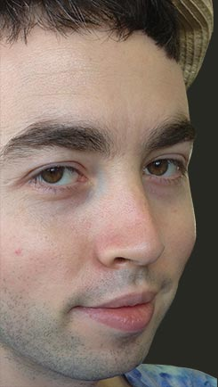

Hello!

{% include max-chadwick-js.html %}My name is Max Chadwick. I am a New York based web designer and developer who is passionate about building user friendly, clean, and elegant websites and digital experiences.
{% include max-chadwick-js.html %}My name is Max Chadwick. I am a New York based web designer and developer who is passionate about building user friendly, clean, and elegant websites and digital experiences.